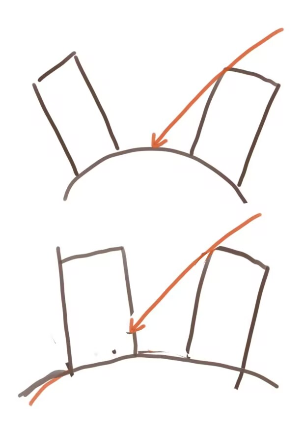
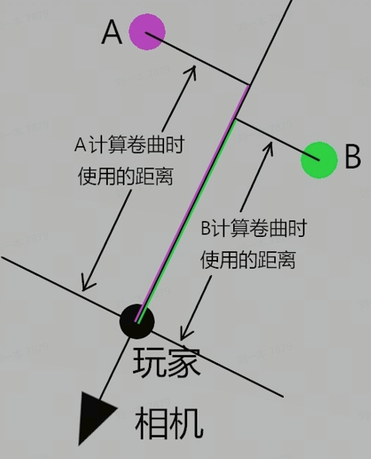

地形卷曲效果的实现，和实现过程中遇到的一些坑。
本文为原创内容，转载请注明地址。
简述
地形卷曲效果，即模仿地球地平线弯曲的一种效果。可以帮助我们在俯视视角的情况下仍然看到大气和天空，如果需要做拥有天气系统的固定俯视视角游戏，地形卷曲效果是必不可少的。（动森是一个很好的案例）
实现
对于基础的实现，其实非常简单，通过脚本实时传入玩家位置，根据物体和玩家之间的深度距离（在Unity里表现为z轴的偏移值）来进行卷轴的偏移。具体的偏移函数可以取抛物线、圆周、以及其他的自定义函数，符合表现需求即可。
阴影Pass的穿帮
对于使用深度Pass的项目，为了剔除正常，需要在DepthOnlyPass和DepthNormalPass里做相同的偏移转换，但是对于ShadowCastPass来说，如果也使用该偏移函数，会导致人物在镜头中移动时，阴影位置也随着人物的移动而偏移，会非常奇怪。
觉得说得比较抽象的话可以按下图理解，就是如果你建筑实时在根据人物坐标进行不同的下沉和偏移的话，在直射光光照方向不变的情况下，投影位置是会发生变化的（红色箭头表示光照方向）

一个可行的方案是，ShadowPass不进行类似的位置偏移，而在ForwardLitPass实时光需要计算shadowMap时，我们对于坐标进行一个逆变换，恢复原来的初始坐标值。
但是更方便的方案是在顶点着色器进行位置转换之前，我们就保存好原始位置的值，传递给片元着色器，在计算shadowMap时直接使用该初始位置值。可以减少逆变化的计算量。
点光源光照的适配
相机剔除矩阵的再适配
镜头需要旋转怎么办？
对于使用世界坐标作为卷曲函数参数的表现来说，当游戏存在镜头左右旋转功能的时候，会产生巨大的穿帮效果
（没法po图，但可以脑部一个很倾斜的建筑）
如何防止这种倾斜穿帮？
很简单，把输入从世界坐标的偏移改为相机空间深度的距离偏移。

1 | half3 pivotPointViewPos = mul(UNITY_MATRIX_V, float4(pivotPoint,1)); |